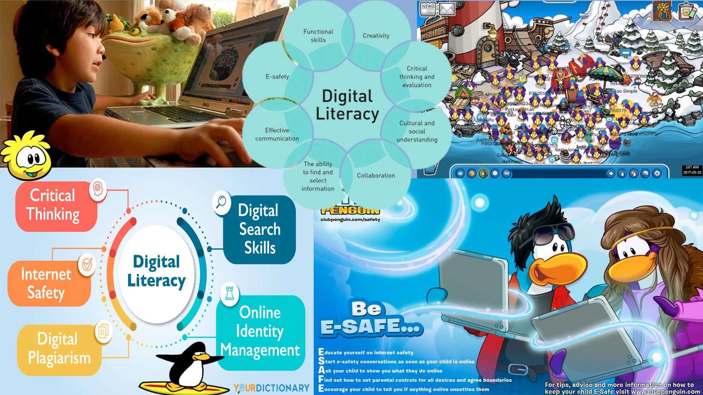

My websites audience:
does the focus of your topic lend itself to particular audiences? What makes you think this?
Whether you want to focus on a broad or narrow audience?
Whether the audience is likely to have pre-existing expectations about the topic?
What types of audience do you have regular access to in order to facilitate user testing?
| Audience Characteristics | Rationale |
|---|---|
| Age | 18+ |
| Gender | Mixed, language will not create a bias to either male or female slang |
| Language proficiency | Will be written towards those with understanding of English |
| Education level | University level, due to some word choices and subtopics explored |
| Attitude toward writer or organisation | Audience will be pleased to read up on the topic and will welcome what I have to say |
| Knowledge of the topic | Some knowledge and basic understanding of what digital literacy is will be useful for the reader, but is not completely necessary |
| Audience reaction | After reading I want the audience to further research what digital literacy is and maybe try to understand where they’ve previously experienced it in their won lives |
| Name | Jessica Loveweb |
| Occupation | Web Developer |
| Web habits | Researching popular sites for inspiration for work, enjoys playing world of warcraft in her spare time |
| Knowledge level | She has an understanding of digital literacy and a genuine interest in it also, plus she used to play club penguin when she was younger |
| Goals | She would love to expand her knowledge on digital literacy to help her create and pitch a new MMO targeted towards young children |
| Needs/wants | She needs to understand what did and didn’t work for club penguin and wants to use this for her own research as well as her own personal interest due to previously playing the game and hoping to feel some nostalgia during her research |
| Skills | She has great coding skills as well as having a creative and open mind |
Writing User Stories
As a web developer, Jessica wants to research various MMO games online both past and present, so she can begin to develop her own idea. Jessica will know she has achieved her goal when she develops her basic understanding of digital literacy to a more complex level, understanding why previously popular MMO’s no longer exist, and what makes the ones around today so popular.
My audience choice is, although narrow, strong and will help me direct the design of my website. I want to incorporate similar colour and design patterns sued for the club penguin website to make it create a spark of nostalgia for those visiting the sit with past experiences of club penguin to bring in that initial interest, but they will come out of my website gaining an understanding of how they have previously experienced digital literacy in their youth.
Webpage 1: Yale School of Art
The web page fails to address its topic with flawed use of the principles of design thinking. It has poor navigation with many things duplicating on the web page making the structure confusing and awkward to read. I understand the appeal of wanting to reach their audience with quirky out there web design but this is just a mess of colour and shape at an attempt to be artistic on the web. The horizontal gradient text boxes in their puke yellow colour is particularly painful. The calendar feature is layed out nice but it’s outsourced from another site and so although nice stands out like a sore thumb against the chaos. There is sue of different kinds of multimedia but it’s just so messy that it can even be hard to know what’s an image and what’s a text box. The background image of the page is not plain in colour and is its own image with makes reading other texts hard when there text travelling down the page with you in the background on the background image. I can tell the project is aimed at the artistic students of yale and the information is relevant to them but I think the design is almost poking fun at them. The lack of symmetry is also really off putting./p>
Webpage 2: The White House
This web page effectively addresses their relevant topics with a sleek and easy to navigate web design. It offers easy opportunities to learn information without struggling to understand text or images on the page. It contracts strongly with the previously explored web page. The colours all work well together and don’t spark any particularly strong or even negative emotions. The font on the page is particularly nice as its smart and makes you take the page seriously compared to the use of a curlier and wilder font. The page is designed well for those visiting it. The overall layout of the page is satisfying to look at and explore.
I would ignore any of the design used on the yale site and wouldn’t want to replicate their mistakes on my own page as my audience would dislike it just as much as I would. The white house however has a nice layout using boxes to separate text and give it a more exciting format than just paragraphs down a large page.
Mood Board
